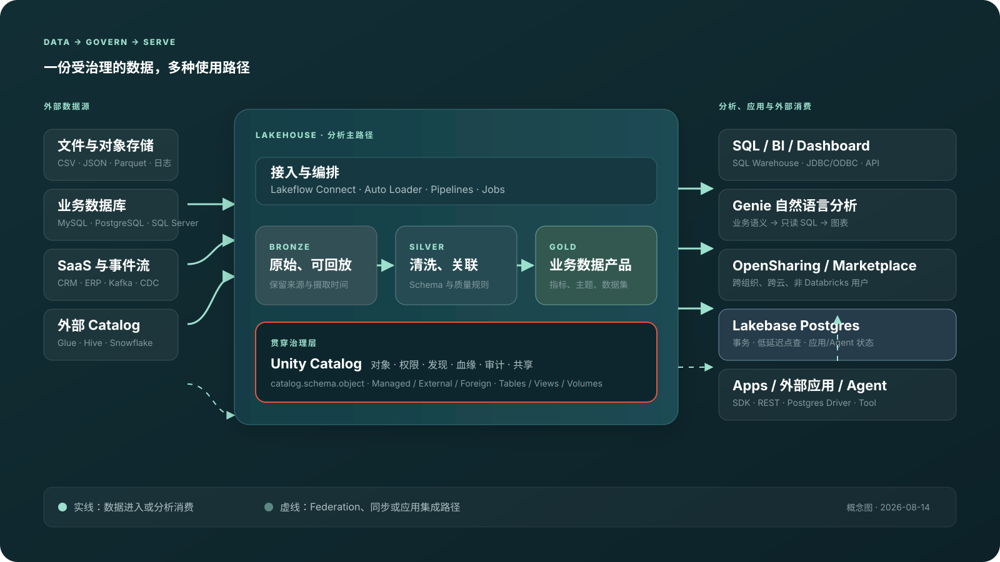
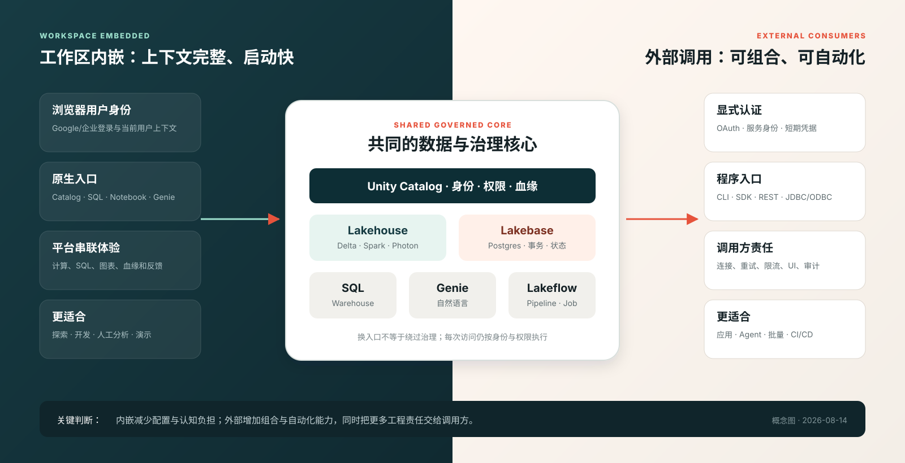

2026-08-14 真实工作区结果
不是产品设想，关键链路已经跑通
OAuth Token 仅驻留内存；Starter Warehouse 已确认停止。录屏隐藏邮箱、头像和对象 ID，数据全部为内置样例或合成数据。
AI Agent 之后新增了什么
从“帮人写代码”走向“受治理的数据入口”
本项目只关注 Agent 如何读取、解释和操作数据，不展开模型训练与推理基础设施。
Genie Agents
自然语言 → 只读 SQL → 表格/图表；领域专家维护 Sources、Instructions、Examples 与 Benchmark。
Genie Code
在 Notebook、SQL、Pipeline 和 Dashboard 中利用当前上下文解释、生成与修复内容。
Lakebase + Apps
Lakehouse 保存分析事实；Postgres 承接低延迟事务、应用状态和 Agent state。
API / Agent Tool
Conversation、Statement、Files API 与标准驱动把同一能力嵌入售后、运维和企业门户。
关键变化不是 Agent 绕过 SQL/权限，而是把语义、治理、执行、反馈和外部工具连接起来；任何退款、改订单、发消息或数据库修复仍需审批。
领导先记住这五点
Databricks 的核心价值
不是单纯的数据湖
Delta 为湖上数据增加可靠表语义，Unity Catalog 统一治理。
一份数据，多种入口
SQL、Notebook、Dashboard、Genie、App 与外部工具共享数据基础。
分析与事务分工
Lakehouse 做大规模分析；Lakebase 用 Postgres 承接低延迟事务。
自然语言仍是 SQL
Genie 利用业务语义生成只读 SQL，权限仍由 Unity Catalog 控制。
内嵌快，外部可组合
工作区减少配置；API、驱动和 Agent 工具适合自动化与系统集成。
一张图看懂
数据从哪里来，最终到哪里去
Unity Catalog 不是末端组件，而是横跨接入、处理、查询、分享与应用的治理层。

最重要的对照
同一能力：工作区内嵌 vs 外部调用
差异不在“能不能调用”，而在身份、上下文、自动化责任和失败处理由谁承担。

内嵌独特点
浏览器身份、Catalog 上下文、计算选择、SQL/图表和反馈体验由平台串联。
外部独特点
可嵌入门户、脚本、CI/CD 和 Agent，但必须显式管理 OAuth、连接、重试和审计。
共同底线
Unity Catalog 权限不能因换成 API 或 Agent 而绕过；写动作必须增加审批边界。
如果底座是 RDS / PolarDB / TaurusDB
缺的不是一个聊天框
云数据库已有 SQL、事务、只读节点与监控；要达到 Genie 类可信分析，还要补旧的平台前置层和新的 Agent 运营层。
平台前置
统一 Catalog、身份、行列策略、Owner、分类、血缘、审计，以及 CDC / 联邦查询。
业务语义
权威视图、Metric、Join、同义词、时间/状态口径和经过 Review 的可信 SQL。
Agent 产品化
安全执行、可解释回答、Benchmark/Monitor、iframe/API，以及独立写动作审批网关。
关键判断：Unity Catalog-like 是必要但不充分；Catalog 管治理，Semantic 管口径，Agent 管对话，Eval 与 Action Gateway 管可信和变更安全。
四条真实故事线
演示案例
每个案例都将提供真实录屏、SVG、中文讲稿、外部视频和可复现步骤。
C1 · 平台主线
高频 Lakehouse 流程
样例或文件数据进入 Bronze，经清洗形成 Silver，再产出可查询与可分享的 Gold 数据。
- Lakeflow / SQL / Notebook
- Delta 表与 Unity Catalog
- Dashboard 与外部 SQL
C2 · 自然语言
对已有数据直接问问题
对比手写 SQL、工作区 Genie 和外部 API/Agent，验证口径、SQL 与权限是否一致。
- 中文问题与业务术语
- Metric View / 元数据
- 错误问题与无权限边界
C3 · 智能售后
订单、退款与售后政策
用结构化数据回答售后问题，生成处理建议；任何写动作都经过人工确认。
- 订单与客服工单
- 退款异常与趋势
- App / Agent 外部入口
C4 · 数据库运维
指标、慢 SQL 与事件诊断
关联监控、告警、变更和 Runbook，生成可追溯的诊断建议，而不是自动修改生产。
- 异常时段与根因线索
- 慢查询与变更关联
- 工单草稿与审批边界
不是只有文档
每个模块都有真实录屏与外部讲解
真实录屏用于证明“怎么做”；页面默认播放中文有声版，无声原版仍保留；外部视频补充官方定位和不同视角。
G1 · 61s · 真实 UI
Genie 业务用户多种用法
退款聚合、Show code、DBOps 报告、连续追问与审批边界
G2 · 83s · 真实 UI
Genie 配置、Monitor 与 Benchmark
7 Sources、Instructions、Example、3 个回归问题与严格失败分析
G3 · 71s · 架构演示
工作区、iframe、API 与多 Agent
外部可组合性、身份/重试/审计责任与写动作 Gate；不冒充 API 实调
D1 · 79s · 架构演示
云数据库如何接入 Genie 类能力
数据库底座、Unity Catalog-like、语义、评测、三条接入路线与动作审批
M02 · 25s
Delta 表与自动血缘
Catalog → Schema → MANAGED Table → Details → Lineage
M05 · 14s
数据接入入口
文件/Volume、对象存储、数据库与 SaaS Connector
M09 · 34s
内嵌 Genie Agent
答案、SQL、Sources、Instructions 与 Example
C2 · 16s
自然语言可信基线
先固定 SQL 真值，再判断 Agent 是否答对
C3 · 16s
智能售后
18 条行动队列，分析自动化、写动作审批
C4 · 16s
数据库智能运维
事故上下文与 Runbook；只读诊断，不自动修库
一句话边界
已跑通核心链路，未虚构生产验证
- 已实测：Volume、Delta、Catalog/Lineage、SQL、Genie、售后与运维分析。
- 只看入口：Job/Pipeline、Lakebase；没有创建资源。
- 资料覆盖：Dashboard、Apps、Federation、Sharing；没有现场对象。
- 不可推出：生产 SLA、私网、合规、容量、成本与无人审批写操作。